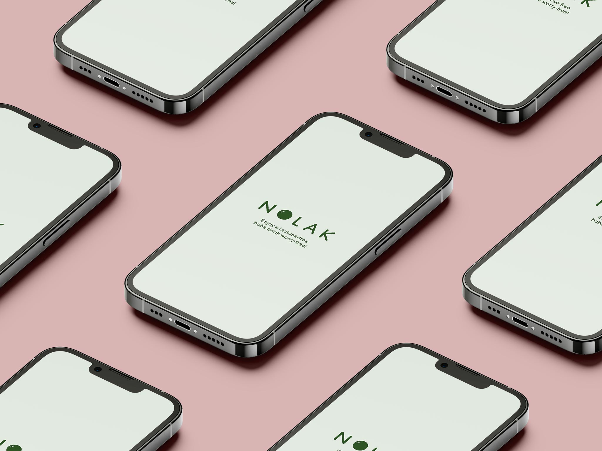

The Nolak logo is a combination of the name in Sulphur Point font and a simple illustration of a boba ball.
An app for young lactose-intolerant people who want to find nearby boba shops that offer lactose-free drinks.
| ROLE | UI Designer |
|---|---|
| YEAR | 2023 |
| DURATION | 3 weeks |
| TOOLS | Figma |
The user can view menus, swipe through photos, and rate shops, allowing other users to make a more informed decision.
The color palette aligns with Nolak’s commission to facilitate access to lactose-free drinks for a young audience. The color green references to lactose-free beverages which are often plant-based products. Pink and orange bring a fun, energetic, and approachable feel for the young target audience.

The typography choices prioritize neatness and modernity. Sulphur Point for its roundness, to give a friendly feel to the app. Shippori Antique B1 for its clarity and ease to read in smaller size.

Nolak users will be welcomed by a splash screen featuring logo and mission statement.
The home screen includes a map of the area where the user can see the available shops nearby.
The user can select a pin to explore the options and learn more about reviews, opening hours, menus, and directions.
Thank you for making it this far